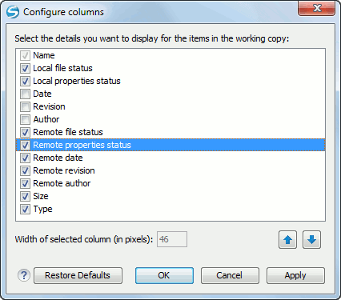

Working Copy Settings
- Show unversioned directories content - Displays the content of
unversioned directories.Note: If this option is not selected, it will be ignored for items that, after a synchronize, are reported as incoming from the repository. This applies for all working copy modes, except All Files.
- Show ignored items - Displays the ignored resource when All Files mode is selected.
- Show ignored directories content - Displays the content of ignored
directories when All Files mode is selected.Note: Although ignored items are not presented in the Modified, Incoming, and Conflicts modes, they will be if, after a synchronize, they are reported as incoming from the repository.
- Show deleted items - Displays the deleted resource when All Files mode is selected. All other modes always display deleted resources, disregarding this option.
 Tree /
Compressed /
Tree /
Compressed /
 Flat - Affect the way
information is displayed inside the Modified,
Incoming, Outgoing, and
Conflicts view modes.
Flat - Affect the way
information is displayed inside the Modified,
Incoming, Outgoing, and
Conflicts view modes.-
Configure columns - Allows you to customize the structure of the Working Copy view data. This action opens the following dialog box:
Figure 1. Configure Columns of Working Copy View The order of the columns can be changed with the two arrow buttons. The column size can be edited in the Width of selected column field. The Restore Defaults button reverts all columns to the default order, width, and enabled/disabled state from the installation of the application.